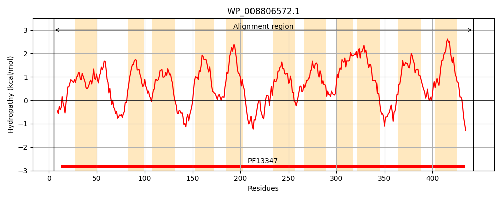
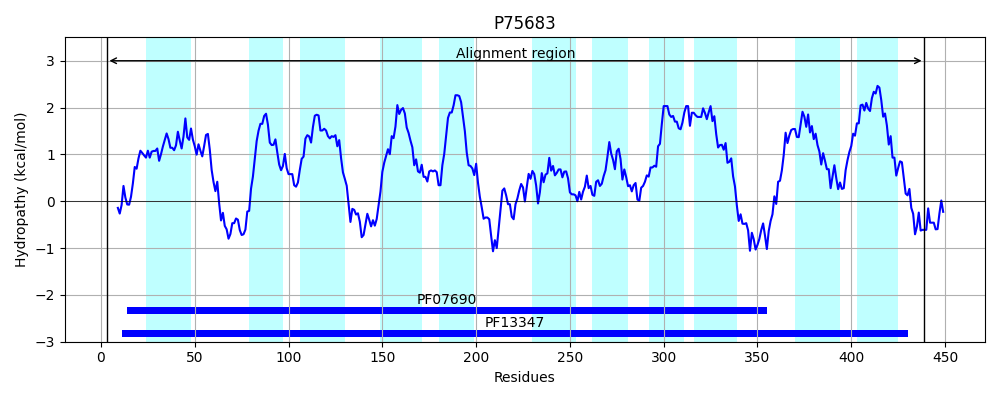
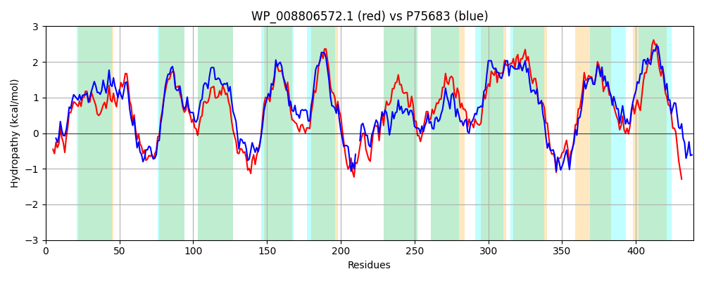

Hit Accession: P75683
Hit TCID: 2.A.2.3.5
Hit Description: gnl|BL_ORD_ID|11396 gnl|TC-DB|P75683|2.A.2.3.5 Hypothetical symporter yagG - Escherichia coli.
Mach Len: 439
e:0.000000
Query TMS Count : 11
Hit TMS Count: 11
TMS-Overlap Score: 10.850000
Predicted Substrates:None
BLAST Alignment:
Score: 1060 , Bit scores: 412 bits, E-value: 1.1e-141, Alignment length: 439, Percentage identity: 46
Query: 5 RISIKEKFSYGLGDTGCNLVWQTVMLFMAWFYTDVFGLSPAHMGTMFLAVRVLDAVTDVLMGAVADRTRTKYGQFRPYILWFAIPFGVLCCLTFYTPDLGYSGKLIYAYVSYTLLSLVYTAINVPYCAMINNISNDSRERVSLQSWRFALSTLGGLIVSLTALPLVAWLGKGNLQNGYFYTMMVMGALSIVLFFICFGLTKERYSTDITANNQSSILDDLKTLLANKDWRILFTLNVVNLIAVLFKGGTTLYYVNNIMGRADLGSLLLTTTLASGVVGAMLSPFIFKNIDKVKGFKLSMALEAVLLIAMYFVPAGNVAAIFTLVIIINIIQLAATPLQWSMLSDIIDAEEKRSGKKLSGIVFSTNLFAIKLGIAIGGALVGYLLAWGDYVGGAAQQSASALQMIKLLFTLFPGVLVALLIVIMNRYSLDDKRLSHMAQE 443
++++K+K YGLGDT C VWQ M +A+FYTDVFGLS MGT+FL RVLDAVTD LMG + DRTRT++GQFRP++LW AIPFG++C LTFYTPD GK+IYA V+Y LL+LVYT +NVPYCAM I+ D +ER +LQSWRF L+ G L +S ALPLV+ +GKG+ Q GYF M V+G +VL ++CF TKERY+ ++ SS+ DLK LL N WRI+ ++ + + +GG TLY+V +M +L + L + + G++ S + D+V FK + +++ + ++ PA ++A IF L I+ + TPLQW M SD++D EE RSG++L G+VFST LF++K+G+AIGGA+VG++LA+ +Y ++ Q L IK+LF + P VL A + ++++ Y L D R+ ++++
Sbjct: 3 QLTMKDKIGYGLGDTACGFVWQATMFLLAYFYTDVFGLSAGIMGTLFLVSRVLDAVTDPLMGLLVDRTRTRHGQFRPFLLWGAIPFGIVCVLTFYTPDFSAQGKIIYACVTYILLTLVYTFVNVPYCAMPGVITADPKERHALQSWRFFLAAAGSLAISGIALPLVSIIGKGDEQVGYFGAMCVLGLSGVVLLYVCFFTTKERYTFEVQPG--SSVAKDLKLLLGNSQWRIMCAFKMMATCSNVVRGGATLYFVKYVMDHPELATQFLLYGSLATMFGSLCSSRLLGRFDRVTAFKWIIVAYSLISLLIFVTPAEHIALIFALNILFLFVFNTTTPLQWLMASDVVDYEESRSGRRLDGLVFSTYLFSLKIGLAIGGAVVGWILAYVNYSASSSVQPVEVLTTIKILFCVVPVVLYAGMFIMLSLYKLTDARVEAISRQ 439 | Protein Hydropathy Plots: |
|---|
|  |  |
Pairwise Alignment-Hydropathy Plot:
|
|---|
|  |